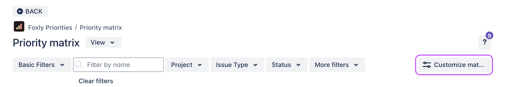
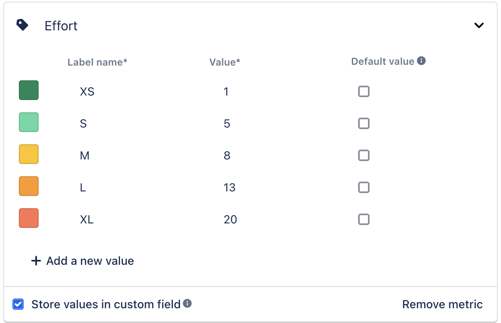
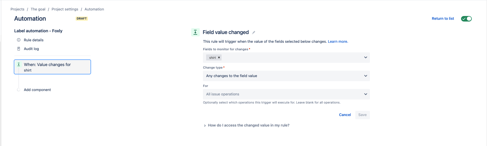
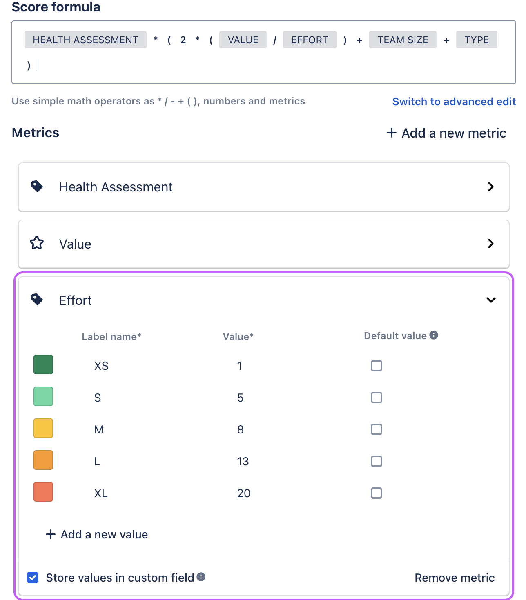
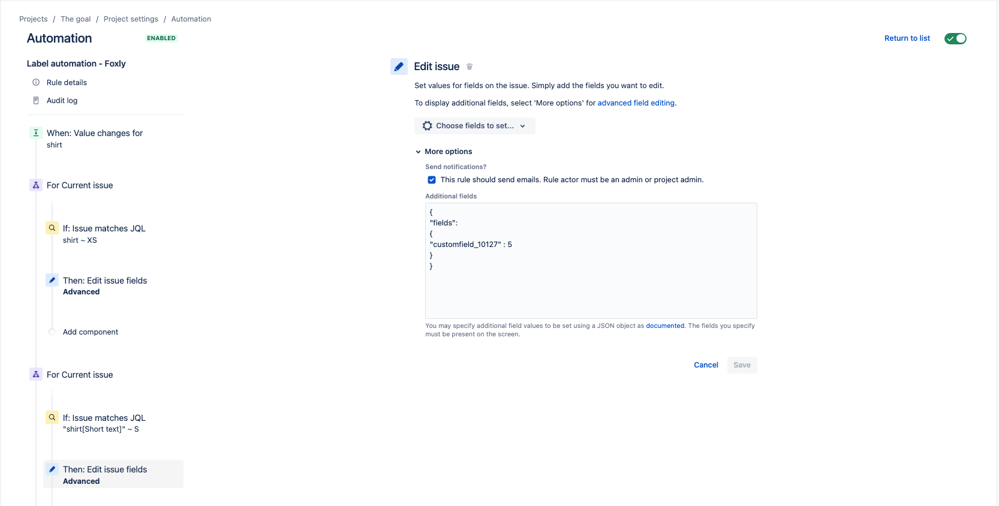

Map Jira custom fields to label metrics
The Store metric in custom fields feature is disabled and will be retired soon
Due to operational changes and platform updates, the Store metric in custom fields feature is now disabled and will be permanently retired after December 10, 2025.
What’s NOT changing
Foxly’s prioritization metrics inside the app will continue to work exactly as they do today.
What is changing
The Store values in a custom field feature is no longer available. The checkbox is disabled.
After 10 December 2025, Foxly will remove the Jira custom fields that were created to duplicate metric values outside the app. These fields are marked lockedand include the description “Field dynamically added by Foxly”.
Only places where you use these fields outside Foxly will be affected, such as JQL filters, issue screens, Jira automation, dashboards, reports, or gadgets.
Once the fields are removed, any filters, automations, or dashboards that rely on them will stop working.
How to identify which fields will be removed
To identify which fields will be removed, go to:
Jira admin settings > Work items > Fields > type “Foxly” in the search box.
Look for Foxly-created dynamic fields with the locked label. Only these fields will be deleted.

Recommended action
Review your workflows, dashboards, and automations that use Foxly-created dynamic Jira fields, and update them to remove dependencies on these fields.
You can continue using:
Priority score fields
Your own Jira custom fields in prioritization formulas
To keep using a label style you like in Foxly, you can map custom field values to match those labels.
Map example
To map a Jira custom field called shirt (the type of this field is short text).
Click the Priorities tab > Customize.

The settings of the prioritization template appear. In this example, the Quick Wins template is used. Click the Effort label and select Store values in custom field.

Click Save Changes.
Click Project settings > Automation.
Click Create a rule. The Field value changed section appears.

Search and select the custom field Shirt, then click Save.
Click Add component and select New branch > Branch rule.
ℹ️ With the Branch rule, you can only update a Foxly metric label when it matches the right condition.To assign the XS label to the metric label in Foxly, use the JQL condition:
"shirt[Short text]" ~ "XS"Set an action to update the label field in Foxly:
{ "fields": { "customfield_10127" : 1 } }ℹ️ Since the metric in Foxly is a custom field, you must add a custom field ID in the Additional fields section. In this example, the label is Effort - Quick Wins. To learn more about finding custom field IDs, see Get custom field IDs for Jira and Jira Service Management.
The JSON must be written with the custom field ID and the value ID. In this example, Effort is the metric, Quick Wins is the template, and the value ID is 1.

Create a Branch rule for each Effort value metric and change JQL conditions accordingly:
